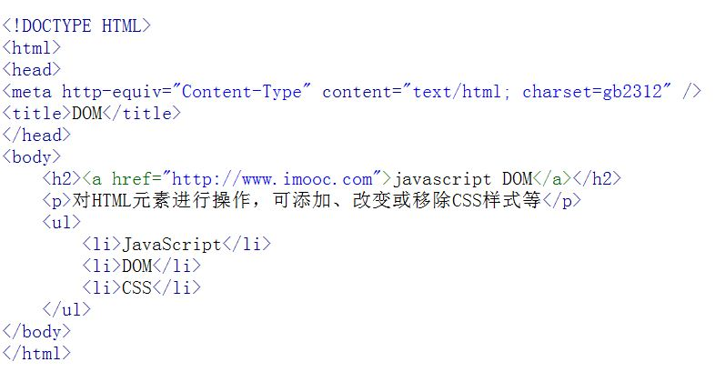

认识DOM 文档对象模型DOM（Document Object Model）定义访问和处理HTML文档的标准方法。DOM 将HTML文档呈现为带有元素、属性和文本的树结构（节点树）。先来看看下面代码:
将HTML代码分解为DOM节点层次图:

HTML文档可以说由节点构成的集合，三种常见的DOM节点:
1. 元素节点：上图中html>、body>、p>等都是元素节点，即标签。
2. 文本节点:向用户展示的内容，如li>...中的JavaScript、DOM、CSS等文本。
3. 属性节点:元素属性，如a>标签的链接属性href="http://www.imooc.com"。
看下面代码:
a href="http://www.imooc.com">JavaScript DOM